San Primiano e
la Carrese di San Pardo

La sera del 25 maggio cominciano i festeggiamenti in onore di San Pardo con il prelievo della statua del copatrono Primiano dalla cappella al centro del cimitero.
“Possiamo supporre, che una delle prime chiese edificate in Larino; dopo che fu data la pace al Cristianesimo, appunto sia stata questa dedicata al glorioso S. Primiano, posta inter murum, & muricinum di Larino Vecchio, e propriamente dalla sua parte orientale. Egli fu un gran Tempio, abbitato poi, e accresciuto col suo Monistero da' Benedettini, diviso in tre navi, ultimamente ridotto in una picciola Chiesa, divota però, e ben proveduta, e al presente titolo di una ricca commenda de' Cavalieri Gerosolimitani [...]”
G. A. TRIA, Memorie storiche civili ed ecclesiastiche
della città e diocesi di Larino, metropoli degli antichi frentani,
Roma, 1744, p. 630
Quella che oggi si presenta come una anonima cappella all'interno del cimitero comunale è stata per secoli il centro principale del cristianesimo della antica Larinum romana prima e della Larino longobarda poi, in quando qui erano custodite le reliquie dei Santi Martiri Larinesi, patroni della città ed elemento su cui si fonda la nuova fede cristiana a Larino.
In un antico codice che si conservava nell'archivio della Chiesa Larinese viene ricordato l'epitaffio che era inciso sull'urna che custodiva le reliquie dei Santi Primiano, Firmiano e Casto, perseguitati in seguito all'editto di Diocleziano nel 303.
La tradizione vuole che i tre fossero fratelli e che, dopo aver addomesticato i leoni nell'anfiteatro di Larino, vennero decapitati presso il tempio di Marte. Primiano venne decapitato il 15 maggio, i suoi fratelli il giorno successivo.
Per saperne di più...
Titolovai alla risorsa
 La Carrese
La Carrese
San Primiano e la Carrese di San Pardo
È la sera del 25 maggio, la vigilia della festa, e un gruppo ristretto di carrieri prelevano la statua di San Primiano nella cappella a lui dedicata situata nel cimitero della città di Larino. Il simulacro del martire viene caricato sul carro n° 1, il più antico, e uno sparo annuncia che il corteo è pronto per ridiscendere verso la Cattedrale.
Questo è il segnale che dà di fatto inizio alla festa.
Nella tarda mattinata del 27 maggio la Carrese si avvia alla conclusione e il primo rito è quello rappresentato dal corteo che riaccompagna San Primiano nella cappella del cimitero.
A riaccompagnare il martire, oltra ai carrieri, è anche San Pardo che sarà ospitato nella stessa cappella durante la scampagnata.
Il 27 maggio: il giorno della festa dei carrieri
Istruzioni per l'uso
Timeline
Se stai aprendo la pagina su desktop puoi scorrere le slide attraverso le frecce di avanti e indietro.

Se stai visualizzando la pagina su smartphone/tablet per fruire della presentazione, scorri con le dita sullo schermo come se volessi sfogliare un libro.